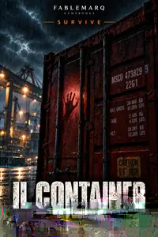

FM / GAMEBOOKS
Fablemarq Gamebooks
Non leggi soltanto la storia.Decidi cosa succede.
Thriller interattivi per adulti. Niente dadi, niente schede personaggio: solo decisioni, conseguenze e strade che cambiano.
- Niente dadi
- Niente schede
- Solo decisioni e conseguenze
Catalogo
Scegli la tensione
Seleziona una serie oppure cerca un titolo: il catalogo si aggiorna immediatamente.
8 titoli

Survive
72 ORE SOTTOTERRA
Sette persone. Una galleria crollata. L'aria non basterà per tutti.
In sviluppoScopri il progetto


Mystery
LA STANZA CHIUSA
Una donna scomparsa. Una camera sigillata. Ogni indizio mente.
In sviluppoScopri il progetto
Horror
LA CASA DEI SUSSURRI
Ogni porta si chiude da sola. Non tutte si riaprono.
In sviluppoScopri il progetto
Sci-Fi
PROTOCOLLO OMEGA
Un segnale impossibile. Una stazione isolata. Qualcosa è già salito a bordo.
In sviluppoScopri il progetto
Real Life
SINDACO PER UN ANNO
Stesse promesse. Nuovi problemi. Tu decidi cosa fare.
In sviluppoScopri il progettoNessun titolo trovato
Prova un'altra parola oppure torna a Tutti.
I titoli Gamebooks mostrati qui sono in sviluppo. I pulsanti di acquisto compariranno solo quando un libro sarà realmente disponibile.
Il formato
Leggi. Scegli. Affronta le conseguenze.
Leggi la situazione
Ogni scena ti mette davanti a informazioni, persone e rischi concreti.
Prendi una decisione
Nessun tiro di dado decide per te. La scelta è tua.
Vivi il risultato
La storia cambia in base a ciò che fai, ciò che ignori e ciò che rischi.